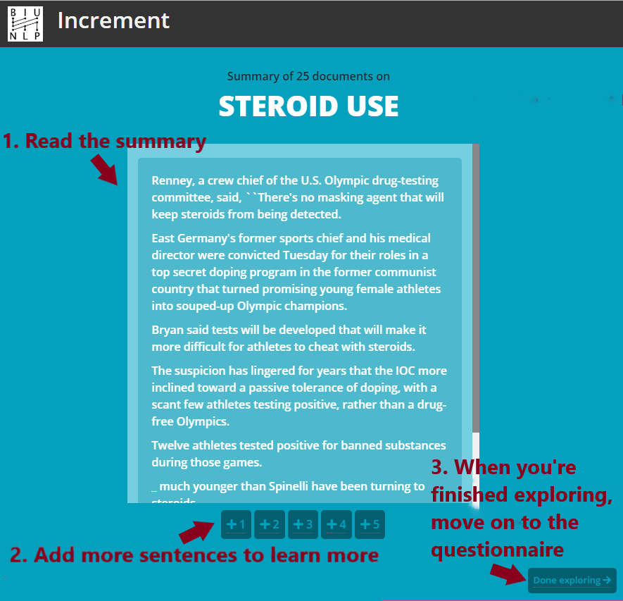

Increment
Topics
Instructions:
Read the summary.
Read further about the topic by adding more text.
Once you have finished exploring, move on to the questionnaire.
In the questionnaire,
mark the statements
that can be found in the text you've read.

Start
1
Show another sentence
2
Show two more sentences
3
Show three more sentences
4
Show four more sentences
5
Show five more sentences
Mark the statements whose information is covered in the presented text
(up to minor details). Then click '
Submit
':
Tip: Use the browser's "find in page" feature using CTRL-F.
placeholder
Done exploring
Move on to questionnaire